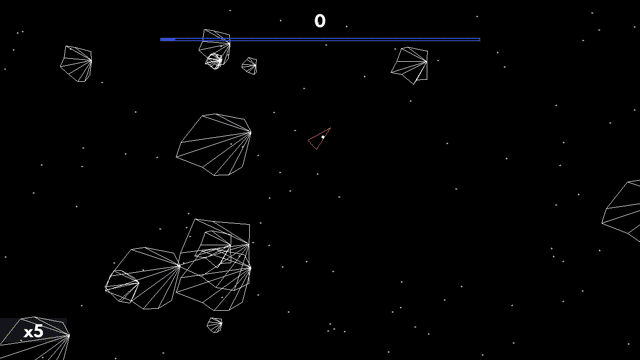
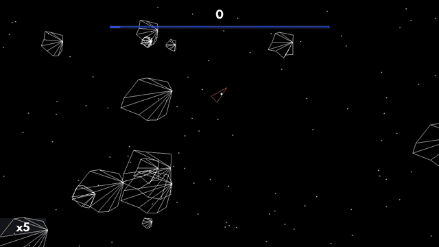

DOYLE T.
DETAIL
- This Resume: doy-lee.github.io
- Email: cv.doylet.2380i@simplelogin.com
- Github: github.com/doy-lee
- Flickr: flickr.com/doy-lee
RESUME QR CODE
WORK EXPERIENCE
-
CURRENT
2020 OCT
-
AOS Group
Software Engineer
-
AI Toolchain/Planning Engine Team: (aosgrp.com)
AOS creates tools to model real-world systems via reasoning agents running in AOS's real-time BDI (Beliefs, Desires, Intentions) planning engine providing fault-tolerant, traceable and explainable autonomous real-world systems.
- C++11, Kafka, RTI DDS, SFML, Dear ImGui, BDI/Multi-Agent Protocols, Windows/Linux
- Write a 2D simulation engine w/ ECS for tests and demonstration of interactive agent models.
- Converting real-world system specs to a multi-agent paradigm to highlight deficiencies in the development methodology leading to new protocols such as how to share beliefs between teams of agents and interactive human contribution into agent decision making.
- Co-implement a distribution protocol for the planning engine allowing the synchronisation of other engine instances for fault-tolerance and cross-engine agent collaboration.
- Documenting best practices and tutorials for designing effective multi-agent systems.
-
2020 OCT
2018 FEB
-
Oxen (prev. Loki)
Software Engineer
-
Blockchain Team (github.com/oxen-io/oxen/commits?author=Doy-lee)
Oxen is a blockchain company that creates privacy tools that enable untraceable, secure and anonymous money, onion routed messaging and networks powered by a masternode network on-top of the blockchain.
- C++14, Boost, Docker, CMake, Libsodium, Monero/Cryptonote, Windows/OSX/Linux/Android
- Implement layer 2 masternodes which are quorums of permissioned nodes via new chain protocols: de/registration and payout transactions and self-regulating consensus with reliability metrics and voting via a P2P gossip network.
- Improve chain resilience by securing blocks using checkpoints formed by masternode consensus providing faster settlement and finalization of transactions on the network.
- Implement an on-chain DNS registry for named records for wallets, messaging aliases and domains on the onion routed networks.
- Transition from Proof of Work to Proof of Stake on a decentralized network using a commit-reveal scheme for generating non-exploitable entropy for block generation.
- Responsible for building, packaging and distribution of releases. Patching vulnerability disclosures and fixing network stalls on an in production network.
- Fix/improve/create test tooling for the Service Node network including a re-write of the Monero testing framework and integration tests using IPC named pipes over multi-process.
-
2017 NOV
2017 AUG
-
Wargaming
Intern SWE
-
- Assisting with the game editor for the asset pipeline involving C++11, Qt, Jira, Perforce, Plastic
Client Tools Team (wargaming.com/en/about/)
SIDE PROJECTS
-
ONGOING
-
Dqn Library
-
Personal Utility Library C++ (github.com/doy-lee/dqn)
- Helpers to bootstrap projects quickly and improving my API design by experience
- Cache friendly stack based containers for data that has a low upper-bound
- Arena based allocators for manual, cheap heap allocation and freeing
- For learning, SHA3-256, unit test, C/C++ metaprogram generator library
-
2020
2017
.
.
2016
-
RaylibSIMD
DTRenderer
DChip8
Math Mash
Dengine
-
SIMD Software Rendering (SSE, 4x faster) (github.com/doy-lee/RaylibSIMD)
3D Software Renderer from First Principles (github.com/doy-lee/DTRenderer)
CHIP8 Interpreter (C/C++, Win32) (github.com/doy-lee/dchip-8)
Mobile Game (C++, Photoshop, Cocos2dx) (doy-lee.github.io/luneaustralia)
Basic 2D Engine (C++, OpenGL, GLFW, STB, OpenAL) (github.com/doy-lee/dengine)
EDUCATION
-
2014-2017
-
UNIVERSITY OF NEW SOUTH WALES
-
Bachelor of Science (Computer Science)
OXEN (formerly Loki) - Privacy tools for untraceable, secure and anonymous communications
SUMMARY
Oxen is a blockchain company that creates privacy tools that enable untraceable, secure and anonymous money, onion routed messaging and networks powered by a masternode network on-top of the blockchain.
They are an open-source, non-for profit company that is responsible for developing the Oxen blockchain, Session a private messenger and Lokinet an onion routing network.
As the primary blockchain engineer, I worked towards developing a masternode network and auxiliary features that protects the network from malicious activity, tampering and allow nodes to enter and leave the permissioned network to maintain a sybil resistant network that is suitable for onion routing of the services provided on-top.
MILESTONES
Service Node Network (Masternode Layer)
https://docs.oxen.io/about-the-oxen-blockchain/oxen-service-nodes- Implement layer 2 masternodes which are quorums of permissioned nodes via new chain protocols: de/registration and payout transactions and self-regulating consensus with reliability metrics and voting via a P2P gossip network.
- Design new cryptographic transactions for Service Node registration/blacklisting/unlocking/voting
- Penalizing misbehaving Service Nodes by temporary locking of registered funds and rewarding behaving Service Nodes with automatic on-chain
- Keep the network consistent against malicious Service Nodes by gracefully rolling back state and banning.
- Develop a node grouping system aka. quorums to self-regulate the network by collecting metrics and coming to consensus to deregister nodes off the network
- JSON RPC API for statistics used by external services for metrics (i.e. CoinMarketCap, Masternodes Pro, lokidashboard.com)
Service Node Checkpointing
https://github.com/oxen-io/oxen-improvement-proposals/blob/master/LIPS/LIP-3.md- Improve chain resilience by securing blocks using checkpoints formed by masternode consensus providing faster settlement and finalization of transactions on the network.
- Defend against 51% attacks on the blockchain and mitigate double spends
- Additional consensus rules to lock in blocks autonomously by Service Nodes
- Improves the previous manual system of updating hardcoded lists per release to passively locking the chain as it progresses.
Oxen Name System
https://docs.oxen.io/using-the-oxen-blockchain/overview#oxen-name-system-ons-human-readable-names-for-session-lokinet-and-more- Implement an on-chain DNS registry for named records for wallets, messaging aliases and domains on the onion routed networks.
- New transactions to burn funds and record temporarily owned name entries into the blockchain
- Interop with Libsodium and Monero cryptography for encryption/decryption of records
- End User API for integration across external services such as Session, wallet software and Lokinet
Pulse (Proof of Stake)
https://github.com/oxen-io/oxen-improvement-proposals/blob/master/LIPS/LIP-5.md- Transition from Proof of Work to Proof of Stake on a decentralized network using a commit-reveal scheme for generating non-exploitable entropy for block generation.
- Coordinate a commit reveal scheme to generate and collect entropy from a quorum of nodes within an time-limited epoch for block generation
- Multi-round process to synchronise data, prevent leaking of random entropy and ensure no biasing of results
- Fail safe mechanisms to support round failure, and network failure, i.e. falling back to Proof of Work when the Service Nodes are unable to coordinate the quorum
Other
- Loki Onion Blockchain Explorer - Forked and repurposed for additional Service Node information
- Loki Integration Tests - Multi-process IPC to blockchain daemons to simulate user interaction
- Loki RPC Doc Generator - Custom Recursive Descent Parser for generating documentation
- Rewriting core testing framework to extensively test new Service Node features
- Handling cross platform builds, CI and distribution (Windows, Linux, OSX, Android)
LINKS
- Oxen Homepage (oxen.io)
- Main Github (github.com/oxen-io/oxen-core)
- Main Commits (github.com/oxen-io/oxen-core/commits?author=Doy-lee)
- Block Explorer (github.com/oxen-io/loki-onion-blockchain-explorer)
- RPC Doc Generator (github.com/doy-lee/loki-rpc-doc-generator)
- Integration Testing (github.com/doy-lee/loki-integration-testing)
DTRENDERER (2017) - 3D Software Renderer from First Principles

SUMMARY
DTRenderer is an attempt to build a simple software renderer from the ground up. The main goal is to build an intuitive understanding of graphics mathematics, rendering pipeline and core concepts. It runs as a Win32 program with minimal dependencies.
MILESTONES
2D Software Rendering
- Alpha Blending
- Bilinear Filtering
- Correct Color Space Pipeline (SRGB <-> Linear)
- Rasterisation
- Texture Mapping
- Translation, Rotation, Scale
3D Software Rendering
- Full Bright, Flat, Gouraud Shading
- Orthogaphic, Perspective Projections
- Translation Rotation Scale
Misc.
- Custom Wavefront Obj Loader (minimal subset)
- Hot Reloadable DLL for Renderer Code (taken from Handmade Hero)
- SIMD "Optimisation" (with a grain of salt, tried to with some % improvement)
LINKS
- Github (github.com/Doy-lee/DTRenderer)
MATH MASHER (2017) - Educational Mobile Math Game
SUMMARY
Math Masher is a cross-platform mobile app that aims to teach basic arithmetic skills including addition, subtraction and multiplication by gamifying the learning experience. The app is developed with a team using the Cocos2dx framework in C++.
My role in the project is as the lead developer and assisting role with asset design.
MILESTONES/RESEARCH
Features that have been implemented at one point or tasks responsible for.
- Project Management (Trello, Minutes Meeting, Code Review etc.)
- Game Engine Architecture (Gameplay, UI, Shop, Debug)
- Basic Sound Editing (Compressor, EQuing, Normalisation)
- Asset Designs (Assisting with graphical asset creation)
LINKS
- Official Website (deprecated, archive only) (doy-lee.github.io/luneaustralia)
- Trailer (youtube.com/watch?v=AUozUZ8aY7g)
DCHIP8 (2017) - CHIP8 Interpreter

SUMMARY
DCHIP8 aims to emulate the CHIP8 architecture to better understand at a lower level operations between memory, cpu, input and output.
MILESTONES/RESEARCH
- Fetch, Decode, Execute Opcodes
- Modelling memory, registers and basic CPU architecture
- Software Rendering and interaction with Win32
- Minimal dependencies, single file executable
LINKS
- Github (github.com/Doy-lee/dchip-8)
- Specification Sheet (devernay.free.fr/hacks/chip8/C8TECH10.htm)
DENGINE (2016) - Basic 2D Engine
 

SUMMARY
Dengine is a solo project, 2D game engine developed with OpenGL and low-level libraries in C. The main goal of Dengine is to facilitate learning from many aspects of Computer Science. Alongside Dengine, Asteroids is being built which guides the development of features for the game. Dengine is inspired by Handmade Hero, with a focus on developing as many features with minimal libraries, such that it is not too time-consuming and counter-productive to do so.
MILESTONES/RESEARCH
Features/research that have been implemented at one point in the making of the engine.
- Asset Management (load data into intermediate representations)
- Audio API from OpenAL
- Basic 2D Game Mathematics/Physics (Vector, Trig, Explicit Euler)
- Collision Detection (Single Axis Theorem, Minkowski Sum/Diff, AABB)
- Debug Services & Displays
- Entity Component Systems
- IMGUI Systems
- Input Parsing
- Push-Buffer Memory Systems
- Small Size Array Optimisations
- Standard Library Replacements (e.g. atoi, strlen, itoa, string)
- Texture Atlas Support, Runtime Font Packing
- OpenGL 2D Rendering Pipeline & Batching Render Calls
LINKS
- Github (github.com/Doy-lee/Dengine)